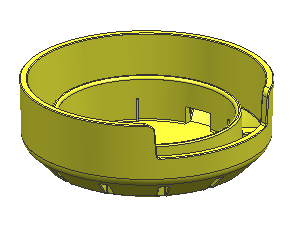
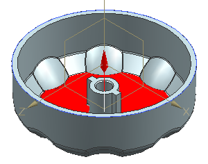
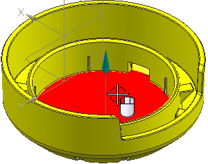
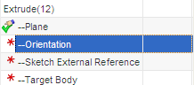
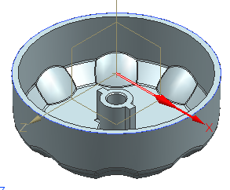
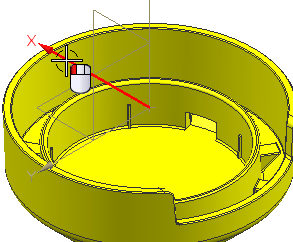
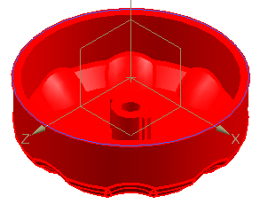
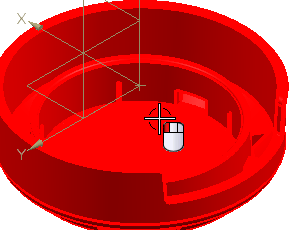
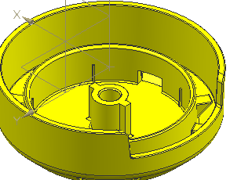

打开目标部件并粘贴特征
如果剪贴板上的对象依赖于尚未复制的几何体，则将打开粘贴特征对话框以允许您解析父引用。父引用是在源部件中首次创建它们时输入到已复制对象的外部几何体对象。
-
打开 des14_bottle_cap_paste_1。

-
选择编辑→粘贴。
-
在粘贴特征对话框的解析方法组中，取消选中复制解析几何体。
如果选中此选项，则状态为“取消解析”或“通过复制几何体解析”的父引用将通过从源部件抽取原输入几何体自动进行解析。此复制的几何体在目标部件中显示为 WAVE 链接的几何体。
您将解析原始父级以将特征添加到现有体中。
原始父级列表框中现在将列出拉伸 (12)中尚未解析的参考。
原始特征窗口将显示原始部件，并高亮显示当前要解析的参考。

-
选择如图所示新特征的放置面。

已经解析了平面参考，已经更新原始父级列表框，并提示您选择方位。


-
选择基准坐标系的 X 轴，如图所示。

已解析了方位参考，NX 将能够自动解析草图外部引用，因为它位于选定基准坐标系的底部。

-
点击下一步 。
系统将显示要解析的参考，即目标体。

-
选择如图所示的实体。

-
点击确定。
已经解析完成所有的参考，特征将被添加到部件中。

-
关闭所有部件。